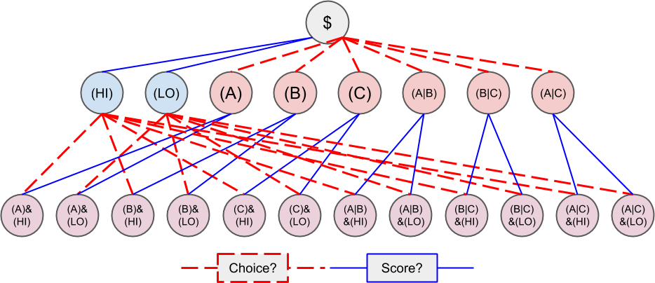

<!DOCTYPE html>
<html lang="en">
<head><meta name="generator" content="Hexo 3.9.0">
    <!-- hexo-inject:begin --><!-- hexo-inject:end --><!-- Document Settings -->
    <meta charset="utf-8">
    <meta http-equiv="X-UA-Compatible" content="IE=edge">

    <!-- Page Meta -->
    <title>Conditional Tokens - Split, Merge, and Redeem Positions</title>
    

    <!-- Mobile Meta -->
    <meta name="HandheldFriendly" content="True">
    <meta name="viewport" content="width=device-width, initial-scale=1.0">

    <!-- Brand icon -->
    <link rel="icon" type="image/png" href="/conditional-tokens/img/favicon.png">
    <meta name="msapplication-TileColor" content="#009CB4">
    <meta name="theme-color" content="#009CB4">

    <meta property="og:site_name" content="Conditional Tokens">
    <meta property="og:type" content="website">
    <meta property="og:title" content="Gnosis - Split, Merge, and Redeem Positions">
    
    <meta property="og:url" content="https://gnosis.github.io/conditional-tokens/split-merge-redeem.html">
    <meta property="og:image" content="https://gnosis.github.io/img/share.png">
    <meta property="article:publisher" content="https://www.facebook.com/gnosis">
    <meta name="twitter:card" content="summary_large_image">
    <meta name="twitter:title" content="Gnosis - Split, Merge, and Redeem Positions">
    
    <meta name="twitter:url" content="https://gnosis.github.io/conditional-tokens/split-merge-redeem.html">
    <meta name="twitter:site" content="@gnosispm">

    <!-- Styles'n'Scripts -->
    <link rel="stylesheet" href="//cdnjs.cloudflare.com/ajax/libs/highlight.js/9.15.6/styles/monokai-sublime.min.css">
    <link rel="stylesheet" href="https://stackpath.bootstrapcdn.com/bootstrap/4.3.1/css/bootstrap.min.css" integrity="sha384-ggOyR0iXCbMQv3Xipma34MD+dH/1fQ784/j6cY/iJTQUOhcWr7x9JvoRxT2MZw1T" crossorigin="anonymous">
    <link href="https://fonts.googleapis.com/css?family=IBM+Plex+Mono:400,600|IBM+Plex+Sans:400,500,700" rel="stylesheet">
    <link rel="stylesheet" href="/conditional-tokens/css/main.css">
    <script src="https://code.jquery.com/jquery-3.3.1.min.js" crossorigin="anonymous"></script><!-- hexo-inject:begin --><!-- hexo-inject:end -->
</head></html>
<body class="template-page">

    <!-- hexo-inject:begin --><!-- hexo-inject:end --><div class="main-container">
        <header>
    <div class="col">
        <a href="/conditional-tokens/" class="logo">Conditional Tokens</a>
    </div>
    <nav>
        <ul>
            <li class="has-submenu ">
                <a href="/conditional-tokens/docs/">Docs <i class="arrow"></i></a>
                <div class="submenu text-right">
                    <div class="container">
                        <div class="row">
                            <div class="col-md-5 text-right">
                                <h4>Documentation</h4>
                                <p class="p-large">Everything you need to start <br>building better markets</p>
                                <a href="/conditional-tokens/docs/" class="link-arrow">Get Learning</a>
                            </div>
                            <div class="col-md-4 offset-md-1">
                                <ul>
                                    <li><a href="/conditional-tokens/docs/technical_documentation.html" class="link-arrow">Overview</a></li>
                                    <li><a href="/conditional-tokens/docs/eip-1155.html" class="link-arrow">EIP-1155</a></li>
                                    <li><a href="/conditional-tokens/conditional-tokens/" class="link-arrow">Conditional Tokens</a></li>
                                    <li><a href="/conditional-tokens/conditional-tokens/get-started.html" class="link-arrow">Get Started</a></li>
                                    <li><a href="/conditional-tokens/tutorials/" class="link-arrow">Tutorials</a></li>
                                    <li><a href="/conditional-tokens/research/" class="link-arrow">Research</a></li>
                                </ul>
                            </div>
                        </div>
                    </div>
                </div>
            </li>
            <li><a href="https://blog.gnosis.pm">Blog</a></li>
        </ul>
    </nav>
    <a href="#" class="mobile-nav-trigger">
        <svg width="22" height="10" viewBox="0 0 22 10" fill="none" xmlns="http://www.w3.org/2000/svg"> <rect width="22" height="2" rx="0.5" fill="#001428"/> <rect y="7" width="22" height="2" rx="0.5" fill="#001428"/> </svg>
    </a>
    <div class="mobile-nav">
        <div class="mobile-nav-header">
            <a href="/conditional-tokens/" class="logo"></a>
            <a href="#" class="mobile-nav-trigger-close">
                <svg width="18" height="17" viewBox="0 0 18 17" fill="none" xmlns="http://www.w3.org/2000/svg"> <rect x="1.5752" y="0.368273" width="22" height="2" rx="0.5" transform="rotate(45 1.5752 0.368273)" fill="#001428"/> <rect x="0.868164" y="15.9246" width="22" height="2" rx="0.5" transform="rotate(-45 0.868164 15.9246)" fill="#001428"/> </svg>
            </a>
        </div>
    </div>
    <div class="backdrop"></div>
</header>
        <!-- The main content area -->
<main id="main" role="main">

	<section class="single-docs-content">
		<div class="container-fluid">
			<div class="row">
				<div class="col-md-3 col-xl-2">
					<aside class="sidebar" role="navigation">
  <a href="#" class="btn sidebar-mobile-trigger">Docs categories</a>
  <div class="sidebar-container">
    <div class="mobile-sidebar-header">
      <a href="/" class="logo"></a>
      <a href="#" class="mobile-sidebar-trigger-close">
        <svg width="18" height="17" viewBox="0 0 18 17" fill="none" xmlns="http://www.w3.org/2000/svg"> <rect x="1.5752" y="0.368273" width="22" height="1" rx="0.5" transform="rotate(45 1.5752 0.368273)" fill="#090909"></rect> <rect x="0.868164" y="15.9246" width="22" height="1" rx="0.5" transform="rotate(-45 0.868164 15.9246)" fill="#090909"></rect> </svg>
      </a>
    </div>
    <ul class="sidebar-menu"><li class=""><a href="/conditional-tokens/docs/technical_documentation.html">Docs</a><ul class="sidebar-submenu"><li class=""><a href="/conditional-tokens/docs/technical_documentation.html">Overview</a></li><li class=""><a href="/conditional-tokens/docs/erc-1155.html">ERC-1155</a></li></ul><li class="active"><a href="/conditional-tokens/conditional-tokens/">Conditional Tokens</a><ul class="sidebar-submenu"><li class=""><a href="/conditional-tokens/conditional-tokens/contract.html">Contract Overview</a></li><li class="active"><a href="/conditional-tokens/conditional-tokens/split-merge-redeem.html">Split, Merge, Redeem</a></li><li class=""><a href="/conditional-tokens/conditional-tokens/get-started.html">Get Started</a></li></ul><li class=""><a href="/conditional-tokens/tutorials/">Tutorials</a><ul class="sidebar-submenu"><li class=""><a href="/conditional-tokens/tutorials/index.html">Tutorials</a></li></ul><li class=""><a href="/conditional-tokens/research/">Research</a><ul class="sidebar-submenu"><li class=""><a href="/conditional-tokens/research/index.html">Research</a></li></ul></ul>
  </div>
  <div class="backdrop"></div>
</aside>
				</div>
				<div class="col-md-9 col-xl-8">
					<div class="row">
						<div class="col-md-12">
							<div class="editor-content">
								<h1 id="Split-Merge-and-Redeem-Positions" class="article-heading"><a href="#Split-Merge-and-Redeem-Positions" class="headerlink" title="Split, Merge, and Redeem Positions"></a>Split, Merge, and Redeem Positions<a class="article-anchor" href="#Split-Merge-and-Redeem-Positions" aria-hidden="true"></a></h1><p>It should be clear from the previous section that, by constructing conditions and outcome collections clearly, we can define <em>positions</em> in prediction markets. Because positions can be split or merged an almost arbitrary amount of times, it means that niche markets (or markets backed by less stable collateral) can still flourish by virtue of their access to global liquidity across all markets. Think about it like this: right now, you have to use your financial insitution as market maker when investing or trading your own money, and your stockbroker in order to trade equities and/or securities, and many other intermediaries in order to access other, more esoteric financial <strong>positions</strong>. You would also have to go to another entirely different market if you have a strong opinion on who will win the next election, which you feel is valuable to others given your access to information.</p>
<p>However, because ERC-1155 tokens give us an inherent ability to split and merge to deeper or shallower positions, making our predictions conditional upon as many different markets as we like; it means that what used to be entirely disparate markets are brought much closer together. Conditions connect markets, making digital trading and investment, securities exchanges, and election prediction possible, even for the long tail of markets and currencies. As the diagram below shows, entirely different markets can grow from the <strong>same pool of collateral</strong>, to the extent that the positions market participants take (i.e. the links in the graph) are conditional upon the results of other markets. </p>
<p></p>
<h2 id="Split" class="article-heading"><a href="#Split" class="headerlink" title="Split"></a>Split<a class="article-anchor" href="#Split" aria-hidden="true"></a></h2><p>Staking collateral in the contract directly to take a shallow position, or burning stake in a shallow position to take a deeper position are both referred to as <em>splitting a position</em>. This is handled the following function:</p>
<pre><code class="solidity"> function splitPosition(IERC20 collateralToken, bytes32 parentCollectionId, bytes32 conditionId, uint[] calldata partition, uint amount)
 external
</code></pre>
<p>If splitting from the collateral, the function will attempt to transfer collateral <em>amount</em> from the message sender to itself. Otherwise, it will burn <em>amount</em> stake held by the message sender in the position being split. Regardless, if successful, <em>amount</em> stake will be minted in the split target positions. If any of the transfers, mints, or burns fail, the transaction will revert. The transaction will also revert if the given partition is trivial, invalid, or refers to more slots than the condition is prepared with.</p>
<p>To decipher this function, let’s consider what would be considered a valid split, and what would be invalid:</p>
<p></p>
<h2 id="Basic-Splits" class="article-heading"><a href="#Basic-Splits" class="headerlink" title="Basic Splits"></a>Basic Splits<a class="article-anchor" href="#Basic-Splits" aria-hidden="true"></a></h2><p>Collateral <code>$</code> can be split into outcome tokens in positions <code>$:(A)</code>, <code>$:(B)</code>, and <code>$:(C)</code>. To do so, use the following code:</p>
<pre><code class="js">    const amount = 1e18 // could be any amount

    // user must allow conditionalTokens to
    // spend amount of DollaCoin, e.g. through
    // await dollaCoin.approve(conditionalTokens.address, amount)

    await conditionalTokens.splitPosition(
        // This is just DollaCoin&#39;s address
        &#39;0xD011ad011ad011AD011ad011Ad011Ad011Ad011A&#39;,
        // For splitting from collateral, pass bytes32(0)
        &#39;0x00&#39;,
        // conditionId from the previous section
        &#39;0x67eb23e8932765c1d7a094838c928476df8c50d1d3898f278ef1fb2a62afab63&#39;,
        // Each element of this partition is an index set:
        // see Outcome Collections for explanation
        [0b001, 0b010, 0b100],
        // Amount of collateral token to submit for holding
        // in exchange for minting the same amount of
        // outcome token in each of the target positions
        amount
    )
</code></pre>
<p>The effect of this transaction is to transfer <code>amount</code> DollaCoin from the message sender to the <code>conditionalTokens</code> to hold, and to mint <code>amount</code> of outcome token for the following positions:</p>
<table>
<thead>
<tr>
<th>Symbol</th>
<th>Position ID</th>
</tr>
</thead>
<tbody>
<tr>
<td>$:(A)</td>
<td>0x8c12fa3bb72c9c455acd4d6034989ec0ce9188afd7c89c8c42d064ed7fe5a9d8</td>
</tr>
<tr>
<td>$:(B)</td>
<td>0x21aec03d8dfd8b5f0a2750718fe491e439f3625816e383b66a05cabd56624b4c</td>
</tr>
<tr>
<td>$:(C)</td>
<td>0x8085f7c500098412ff2fc701a74174527e7b39a2b923cd0bca6ad2d5f7fa348d</td>
</tr>
</tbody>
</table>
<p>Outcome tokens are not ERC-20 tokens, but ERC-1155 multi tokens, allowing for batch transfers and other useful, gas-saving functionality explained below.</p>
<p>Importantly, the set of <code>(A)</code>, <code>(B)</code>, and <code>(C)</code> is not the only nontrivial partition of outcome slots for the example categorical condition. For example, the set <code>(B)</code> (with index set <code>0b010</code>) and <code>(A|C)</code> (with index set <code>0b101</code>) also partitions these outcome slots, and consequently, splitting from <code>$</code> to <code>$:(B)</code> and <code>$:(A|C)</code> is also valid and can be done with the following code:</p>
<pre><code class="js">
    await conditionalTokens.splitPosition(
        &#39;0xD011ad011ad011AD011ad011Ad011Ad011Ad011A&#39;,
        &#39;0x00&#39;,
        &#39;0x67eb23e8932765c1d7a094838c928476df8c50d1d3898f278ef1fb2a62afab63&#39;,
        // This partition differs from the previous example
        [0b010, 0b101],
        amount,
    )
</code></pre>
<p>This transaction also transfers <code>amount</code> DollaCoin from the message sender to the <code>conditionalTokens.sol</code> to hold, and it mints <code>amount</code> of ERC-1155 outcome token for the following positions:</p>
<table>
<thead>
<tr>
<th>Symbol</th>
<th>Position ID</th>
</tr>
</thead>
<tbody>
<tr>
<td>$:(B)</td>
<td>0x21aec03d8dfd8b5f0a2750718fe491e439f3625816e383b66a05cabd56624b4c</td>
</tr>
<tr>
<td>$:(A or C)</td>
<td>0xb33b3d0035913315b76e85842f682920f78b32c43c7175768c4c67e3f31e6413</td>
</tr>
</tbody>
</table>
<p>If non-disjoint index sets are supplied to <code>splitPosition</code>, the transaction will revert. Partitions must be valid. For example, you can’t split <code>$</code> to <code>$:(A|B)</code> and <code>$:(B|C)</code> because <code>(A|B)</code> (<code>0b011</code>) and <code>(B|C)</code> (<code>0b110</code>) share outcome slot <code>B</code> (<code>0b010</code>).</p>
<h2 id="Splits-to-Deeper-Positions" class="article-heading"><a href="#Splits-to-Deeper-Positions" class="headerlink" title="Splits to Deeper Positions"></a>Splits to Deeper Positions<a class="article-anchor" href="#Splits-to-Deeper-Positions" aria-hidden="true"></a></h2><p>Splitting a shallow position means burning outcome tokens in that position in order to acquire outcome tokens in deeper positions. For example, you can split <code>$:(A|B)</code> to target <code>$:(A|B)&amp;(LO)</code> and <code>$:(A|B)&amp;(HI)</code>:</p>
<pre><code class="js">    await conditionalTokens.splitPosition(
        // Note that we&#39;re still supplying the same collateral token
        // even though we&#39;re going two levels deep.
        &#39;0xD011ad011ad011AD011ad011Ad011Ad011Ad011A&#39;,
        // Here, instead of just supplying 32 zero bytes, we supply
        // the collection ID for (A|B).
        // This is NOT the position ID for $:(A|B)!
        &#39;0x52ff54f0f5616e34a2d4f56fb68ab4cc636bf0d92111de74d1ec99040a8da118&#39;,
        // This is the condition ID for the example scalar condition
        &#39;0x3bdb7de3d0860745c0cac9c1dcc8e0d9cb7d33e6a899c2c298343ccedf1d66cf&#39;,
        // This is the only partition that makes sense
        // for conditions with only two outcome slots
        [0b01, 0b10],
        amount,
    )
</code></pre>
<p>This transaction burns <code>amount</code> of outcome token in position <code>$:(A|B)</code> (positionId <code>0x6147e75d1048cea497aeee64d1a4777e286764ded497e545e88efc165c9fc4f0</code>) in order to mint <code>amount</code> of outcome token in the following positions:</p>
<table>
<thead>
<tr>
<th>Symbol</th>
<th>Position ID</th>
</tr>
</thead>
<tbody>
<tr>
<td>$:(A or B)&amp;(LO)</td>
<td>0xcc77e750b61d29e158aa3193faa3673b2686ba9f6a16f51b5cdbea2a4f694be0</td>
</tr>
<tr>
<td>$:(A or B)&amp;(HI)</td>
<td>0xbacf3ddf0474d567cd254ea0674fe52ab20a3e2ebca00ec71a846f3c48c5de9d</td>
</tr>
</tbody>
</table>
<h2 id="Splits-on-Partial-Partitions" class="article-heading"><a href="#Splits-on-Partial-Partitions" class="headerlink" title="Splits on Partial Partitions"></a>Splits on Partial Partitions<a class="article-anchor" href="#Splits-on-Partial-Partitions" aria-hidden="true"></a></h2><p>Supplying a partition which does not cover the set of all outcome slots for a condition, but rather a specific outcome collection, is also possible. For example, it is possible to split <code>$:(B|C)</code> (positionId <code>0x5d06cd85e2ff915efab0e7881432b1c93b3e543c5538d952591197b3893f5ce3</code>) to <code>$:(B)</code> and <code>$:(C)</code>:</p>
<pre><code class="js">    await conditionalTokens.splitPosition(
        &#39;0xD011ad011ad011AD011ad011Ad011Ad011Ad011A&#39;,
        // Note that we also supply zeroes here, as the only aspect shared
        // between $:(B|C), $:(B) and $:(C) is the collateral token
        &#39;0x00&#39;,
        &#39;0x67eb23e8932765c1d7a094838c928476df8c50d1d3898f278ef1fb2a62afab63&#39;,
        // This partition does not cover the first outcome slot
        [0b010, 0b100],
        amount,
    )
</code></pre>
<h2 id="Merging-Positions" class="article-heading"><a href="#Merging-Positions" class="headerlink" title="Merging Positions"></a>Merging Positions<a class="article-anchor" href="#Merging-Positions" aria-hidden="true"></a></h2><p>Merging positions does precisely the opposite of splitting a position. It burns outcome tokens in the deeper positions to either mint outcome tokens in a shallower position, or send collateral to the message sender. You can see below that merging is the same as splitting, except in reverse:</p>
<p></p>
<p>To merge positions, use the following function:</p>
<pre><code class="solidity">function mergePositions(IERC20 collateralToken, bytes32 parentCollectionId, bytes32 conditionId, uint[] calldata partition, uint amount) external
</code></pre>
<h2 id="Querying-and-Transferring-Stake" class="article-heading"><a href="#Querying-and-Transferring-Stake" class="headerlink" title="Querying and Transferring Stake"></a>Querying and Transferring Stake<a class="article-anchor" href="#Querying-and-Transferring-Stake" aria-hidden="true"></a></h2><p>Because outcome tokens are ERC-1155 multi token, each one is indexed by an ID. In particular, positionIds are used to index outcome tokens. This is reflected in the balance querying function:</p>
<pre><code class="solidity">balanceOf(address owner, uint256 positionId) external view returns (uint256)
</code></pre>
<p>To transfer outcome tokens, the following functions may be used, as per ERC-1155. These have been <a href="https://github.com/ethereum/EIPs/issues/1155#issuecomment-399969060" target="_blank" rel="noopener">shown to save on gas costs</a> and allow you to move many tokens at once, which shortens the process of settling positions after the oracle has submitted a payout vector.</p>
<pre><code class="solidity">safeTransferFrom(address from, address to, uint256 positionId, uint256 value, bytes data) external
safeBatchTransferFrom(address from, address to, uint256[] positionIds, uint256[] values, bytes data) external
safeMulticastTransferFrom(address[] from, address[] to, uint256[] positionIds, uint256[] values, bytes data) external
</code></pre>
<h2 id="Redeeming-Positions" class="article-heading"><a href="#Redeeming-Positions" class="headerlink" title="Redeeming Positions"></a>Redeeming Positions<a class="article-anchor" href="#Redeeming-Positions" aria-hidden="true"></a></h2><p>Before this is possible, the payout vector must be submitted by the oracle:</p>
<pre><code class="solidity">function reportPayouts(bytes32 questionId, uint[] calldata payouts) external
</code></pre>
<p>This will emit the following event:</p>
<pre><code class="solidity">event ConditionResolution(bytes32 indexed conditionId, address indexed oracle, bytes32 indexed questionId, uint outcomeSlotCount, uint[] payoutNumerators)
</code></pre>
<p>Then positions containing this condition can be redeemed via:</p>
<pre><code class="solidity">function redeemPositions(IERC20 collateralToken, bytes32 parentCollectionId, bytes32 conditionId, uint[] calldata indexSets) external
</code></pre>
<p>This will trigger the following event:</p>
<pre><code class="solidity">event PayoutRedemption(address indexed redeemer, IERC20 indexed collateralToken, bytes32 indexed parentCollectionId, bytes32 conditionId, uint[] indexSets, uint payout)
</code></pre>
<p>Take a look at this chart to get a more visual understanding of the flow:</p>
<p></p>

							</div>
							<div class="docs-footer">
								Last update: 2019-10-02
								
							</div>
						</div>
					</div>
				</div>
				<div class="col-lg-12 col-xl-2 d-none d-xl-block">
					<div class="right-sub-navigation">
						<b>On this page</b>
						<ul></ul>
					</div>
				</div>
			</div>
		</div>
	</section>

</main>
        <footer>
    <div class="get-started">
        <div class="container">
            <div class="row">
                <div class="col-lg-6">
                    <h3><a href="https://github.com/gnosis/GECO" target="_blank" rel="noopener noreferrer">Get a Grant and Start Building</a></h3>
                </div>
                <div class="col-lg-6 text-right">
                    <div class="inline">
                        <a href="/conditional-tokens/docs/" class="btn btn-white">Docs</a>
                    </div>
                </div>
                <div class="col-lg-12 text-right">
                    <div class="inline">
                        <a href="https:gnosis.io" class="btn btn-white gnosis-btn">Gnosis</a>
                    </div>
                </div>
            </div>
            <div class="row">
                <div class="col-lg-6">
                    <a href="https://github.com/gnosis/conditional-tokens-contracts" target="_blank" rel="noopener noreferrer">
                        <div class="footer-circle footer-1"></div>
                    </a>
                    <a href="http://t.me/gnosisgeneral" target="_blank" rel="noopener noreferrer">
                        <div class="footer-circle footer-2"></div>
                    </a>
                    <a href="https://chat.gnosis.io" target="_blank" rel="noopener noreferrer">
                        <div class="footer-circle footer-3"></div>
                    </a>
                    <a href="https://blog.gnosis.pm/tagged/prediction-markets" target="_blank" rel="noopener noreferrer">
                        <div class="footer-circle footer-4"></div>
                    </a>
                </div>
            </div>
        </div>
    </div>
</footer>

        
    </div>

    <!-- 3rd party scripts -->
    <script src="//cdn.jsdelivr.net/bluebird/3.5.0/bluebird.min.js"></script>
    <script src="https://cdnjs.cloudflare.com/ajax/libs/fetch/2.0.3/fetch.js"></script>
    <script src="https://cdnjs.cloudflare.com/ajax/libs/popper.js/1.14.7/umd/popper.min.js" integrity="sha384-UO2eT0CpHqdSJQ6hJty5KVphtPhzWj9WO1clHTMGa3JDZwrnQq4sF86dIHNDz0W1" crossorigin="anonymous"></script>
    <script src="https://stackpath.bootstrapcdn.com/bootstrap/4.3.1/js/bootstrap.min.js" integrity="sha384-JjSmVgyd0p3pXB1rRibZUAYoIIy6OrQ6VrjIEaFf/nJGzIxFDsf4x0xIM+B07jRM" crossorigin="anonymous"></script>
    <script src="//cdn.jsdelivr.net/gh/highlightjs/cdn-release@9.15.6/build/highlight.min.js"></script>
    <script src="https://cdn.jsdelivr.net/npm/js-cookie@2/src/js.cookie.min.js"></script>
    <script src="https://cdnjs.cloudflare.com/ajax/libs/sticky-kit/1.1.3/sticky-kit.min.js"></script>
    <script src="https://cdnjs.cloudflare.com/ajax/libs/masonry/4.2.2/masonry.pkgd.min.js"></script>
    <script src="https://unpkg.com/imagesloaded@4/imagesloaded.pkgd.min.js"></script>
    <script type="text/javascript" src="/conditional-tokens/js/main.js"></script><!-- hexo-inject:begin --><!-- Begin: Injected MathJax -->
<script type="text/x-mathjax-config">
  MathJax.Hub.Config("");
</script>

<script type="text/x-mathjax-config">
  MathJax.Hub.Queue(function() {
    var all = MathJax.Hub.getAllJax(), i;
    for(i=0; i < all.length; i += 1) {
      all[i].SourceElement().parentNode.className += ' has-jax';
    }
  });
</script>

<script type="text/javascript" src="">
</script>
<!-- End: Injected MathJax -->
<!-- hexo-inject:end -->
</body>
</html>
